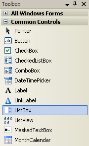
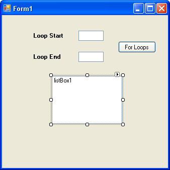
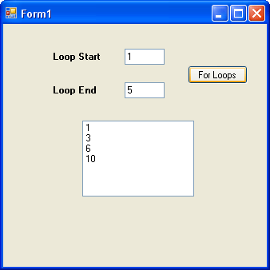
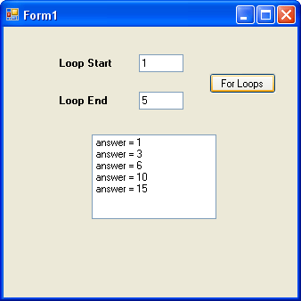
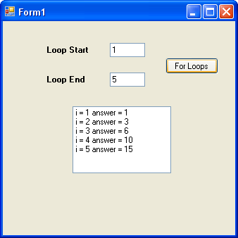
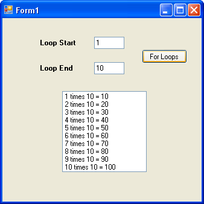
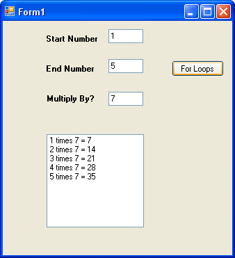
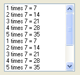

A Times Table Programme in C#
<< Continues from the previous lesson
We can now write a little times table programme. We'll use the text boxes to ask users to input a start number and end number. We'll use these to display the 10 times table. So if the user types a 1 into the first text box and a 5 into the second text box, we'll display this:
1 times 10 = 10
2 times 10 = 20
3 times 10 = 30
4 times 10 = 40
5 times 10 = 50
Instead of using a message box to display the results, we'll use a List Box. A list box, you will not be surprised to hear, is used to display lists of items. But it's easier to show you what they do rather than explain. So use the Toolbox on the left of Visual C# to add a list box to your form:

Resize your list box, and your form will now look something like ours below:

Double click your button to get at your code. Now add this line to your loop (the line to add is in blue bold below):
for (int i = loopStart; i <= loopEnd; i++)
{
answer = answer + i;
listBox1.Items.Add( answer.ToString() );
}
So you start by typing the Name of your list box (listBox1, for us). After a dot, you should see the IntelliSense list appear. Select Items from the list. Items is another property of list boxes. It refers to the items in your list. After the word Items, you type another dot. From the IntelliSense list, select the Add method. As its name suggests, the Add method adds items to your list box. Between the round brackets, you type what you want to add to the list of items. In our case, this was just the answer, converted to a string.
You can delete the message box line, if you like, because you don't need it. But run your programme and enter 1 in the first text box and 5 in the second text box. Click your button and your form should look like this:

The programme is supposed to add up the number 1 to 5, or whatever numbers were typed in the text boxes. The list box is displaying one answer for every time round the loop. However, it's only displaying 4 items. If you solved the problem as to why 45 was displayed in the message box, and not 55 then you'll already know why there are only four items in the list box. If you didn't, examine the first line of the for loop:
for (int i = loopStart; i < loopEnd; i++)
The problem is the second part of the loop code:
i < loopEnd
We're telling C# to go round and round while the value in i is less than the value in loopEnd. C# will stop looping when the values are equal. The value in loopEnd is 5 in our little programme. So we're saying this to C#, "Keep looping while the value in i is less than 5. Stop looping if it's 5 or more."
Cleary, we've used the wrong Conditional Operator. Instead of using the less than operator, we need … well, which one do we need? Replace the < symbol with the correct one.
Exercise G
For some extra points, can you think of another way to solve the problem? One
where you can keep the less than symbol?
To add some more information in your list box, change your line of code to this:
listBox1.Items.Add( "answer = " + answer.ToString( ) );
The thing to add is the text in red above. We've typed some direct text "answer=" and followed this with the concatenation symbol ( + ). C# will then join the two together, and display the result in your list box. Run your programme again, and the list box will be this:

To make it even clearer, add some more text to your list box. Try this:
listBox1.Items.Add( "i = " + i + " answer = " + answer.ToString( ) );
Again, the text to add is in blue. Run your programme, and your list box will look like this:

We've now added the value of the variable called i. This makes it clear how the value of i changes each time round.
The Times Table Programme
We now have all the ingredients to write the Times Table programme.
So return to your coding window. What we're going to do, remember, is to use a for loop to calculate and display the 10 times table. We need another variable, though, to hold the 10. So add this to your variables:
int multiplyBy = 10;
The only other thing we need to do is to change the code between the curly brackets of the for loop. At the moment, we have this:
answer = answer + i;
listBox1.Items.Add( "i = " + i + " answer = " + answer.ToString()
);
Delete these two lines and replace them with these two:
answer = multiplyBy * i;
listBox1.Items.Add(i + " times " + multiplyBy + " = " + answer.ToString());
The list box line is a bit messy, but examine the part between the round brackets:
i + " times " + multiplyBy + " = " + answer.ToString()
It's just a combination of variable names and direct text. The first line of the code, though, is a simple multiplication. We multiply whatever is inside of the variable called multiplyBy (which is 10) by whatever is inside of the variable called i. C# is adding 1 to the value of i each time round the loop, so the answer gets updated and then displayed in the list box.
Run your programme. Enter 1 in the first text box and 10 in the second text box. Click you button to see the ten times table:

So with just a few lines of code, and the help of a for loop, we've created a programme that does a lot of work. Think how much more difficult this type of programme would be without looping.
Exercise H
At the moment, we're multiplying by 10 and, therefore, displaying the 10 times
table. Add another text box to your form. Add a label that asks users which
times table they want. Use this value in your code to display the times table
for them. So if your user types a 7 into your new text box, clicking the button
would display the 7 times table in the list box. Here's what your programme
should look like when you're finished (we've change the first two labels, as
well):

When you complete this exercise, click your button a few times. You'll notice (as long as you have numbers in the text boxes) that the list box doesn't clear itself. You'll have this in your list box:

So the new information is simply added to the end. To solve this, add the following line anywhere before your for loop, but inside of your button code.
listBox1.Items.Clear();
So instead of using the Add() method, you use the Clear() method. This will clear out all the items in a list box. But can you see why the line of code would be no good inside of the loop? Or after the loop?
But that's enough of for loop. We'll now briefly explore two other types of loops: do loops and while loops.